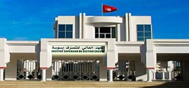
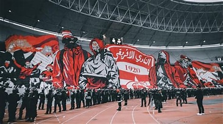
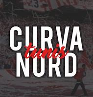

Wael Abidi ISGS
The Higher Institute of Management of Sousse (ISG Sousse) is a prestigious Tunisian academic institution specializing in management and business studies. Located in the vibrant city of Sousse, the institute plays a pivotal role in shaping the academic and professional paths of its students. ISG Sousse offers a wide range of programs, including accounting, marketing, information technology, and human resource management.
Tajerouine, with the postal code 7150, is a charming town located in the governorate of El Kef in northwest Tunisia. Nestled at the foot of the majestic Jebel Serj mountains, this town is known for its rich history and picturesque landscapes. Tajerouine serves as a cultural and agricultural hub for the region, with its economy primarily driven by farming and small-scale artisanal activities. The town’s warm and welcoming community preserves its traditional heritage while embracing modernity. Visitors often enjoy exploring its serene surroundings, historical landmarks, and the unique blend of Tunisian rural life with natural beauty.
There are no words to describe my love for you
 Wael Abidi ISGS
Cour PROG WEB : S1 ISGS
Tajerouine, with the postal code 7150, is a charming town located in the governorate of El Kef in northwest Tunisia. Nestled at the foot of the majestic Jebel Serj mountains, this town is known for its rich history and picturesque landscapes. Tajerouine serves as a cultural and agricultural hub for the region, with its economy primarily driven by farming and small-scale artisanal activities. The town’s warm and welcoming community preserves its traditional heritage while embracing modernity. Visitors often enjoy exploring its serene surroundings, historical landmarks, and the unique blend of Tunisian rural life with natural beauty.
DODGERS CLUBISTE 2007 || North vandals 2007 || African Winners 1995 || Leaders Clubistes 2003